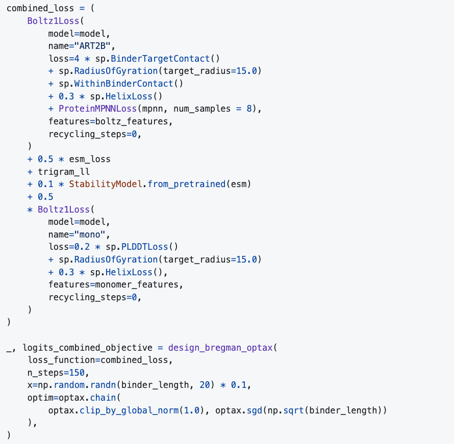

AI Innovators: How JAX on TPU is helping Escalante advance AI-driven protein design#

Srikanth Kilaru, Senior Product Manager, Google ML Frameworks
As a Python library for accelerator-oriented array computation and program transformation, JAX is widely recognized for its power in training large-scale AI models. But its core design as a system for composable function transformations unlocks its potential in a much broader scientific landscape. Following our recent post on solving high-order partial differential equations, or PDEs, we’re excited to highlight another frontier where JAX is making a significant impact: AI-driven protein engineering.
I recently spoke with April Schleck and Nick Boyd, two co-founders of Escalante, a startup using AI to train models that predict the impact of drugs on cellular protein expression levels. Their story is a powerful illustration of how JAX’s fundamental design choices — especially its functional and composable nature — are enabling researchers to tackle multi-faceted scientific challenges in ways that are difficult to achieve with other frameworks.
A new approach to protein design#
April and Nick explained that Escalante’s long-term vision is to train machine learning (ML) models that can design drugs from the ground up. Unlike fields like natural language processing, which benefit from vast amounts of public data, biology currently lacks the specific datasets needed to train models that truly understand cellular systems. Thus, their immediate focus is to solve this data problem by using current AI tools to build new kinds of lab assays that can generate these massive, relevant biological datasets.
This short-term mission puts them squarely in the field of protein engineering, which they described as a complex, multi-objective optimization problem. When designing a new protein, they aren’t just optimizing one thing; it needs to bind to a specific target, while also being soluble, thermostable, and expressible in bacteria. Each of these properties is predicted by a different ML model (see figure below), ranging from complex architectures like AlphaFold 2 (implemented in JAX) to simpler, custom-trained models. Their core challenge is to combine all these different objectives into a single optimization loop.
This is where, as April put it, “JAX became a game-changer for us.” She noted that while combining many AI models might be theoretically possible in other frameworks, JAX’s functional nature makes it incredibly natural to integrate a dozen different ones into a single loss function (see figure below).
 Easily combine multiple objectives represented by different loss terms and models
In the above code, Nick explained that there are at least two different ways models are being combined — some loss terms that are being linearly combined (e.g. the AF loss + the ESM pseudo log likelihood loss), and some terms where models are being composed serially (e.g., in the first Boltz-1 term we first fold the sequence with Boltz-1 and then compute the sequence likelihood after inverse folding with another model, ProteinMPNN).
To make this work, they embraced the JAX ecosystem, even translating models from PyTorch themselves — a prime example being their JAX translation of the Boltz-2 structure prediction model.
This approach gives what April called an “expressive language for protein design,” where models can be composed, added, and transformed to define a final objective. April said that the most incredible part is that this entire, complex graph of models “can be wrapped in a single jax.jit call that gives great performance” — something they found very difficult to do in other frameworks.
Instead of a typical training run that optimizes a model’s weights, their workflow inverts the process to optimize the input itself, using a collection of fixed, pre-trained neural networks as a complex, multi-objective loss function. The approach is mechanically analogous to Google’s DeepDream. Just as DeepDream takes a fixed, pre-trained image classifier and uses gradient ascent to iteratively modify an input image’s pixels to maximize a chosen layer’s activation, Escalante’s method starts with a random protein sequence. This sequence is fed through a committee of “expert” models — each one a pre-trained scorer for a different desirable property, like binding affinity or stability. The outputs from all the models are combined into a single, differentiable objective functional. They then calculate a gradient of this final score with respect to the input sequence via backpropagation. An optimizer then uses this gradient to update the sequence, nudging it in a direction that better satisfies the collective requirements of all the models. This cycle repeats, evolving the random initial input into a novel, optimized protein sequence that the entire ensemble of models “believes” is ideal.
Nick said that the choice of JAX was critical for this process. Its ability to compile and automatically differentiate complex code makes it ideal for optimizing the sophisticated loss functions at the heart of their work with Escalante’s library of tools for their protein design work, Mosaic. Furthermore, the framework’s native integration with TPU hardware via the XLA compiler allowed them to easily scale these workloads.
Escalante is sampling many potential protein designs for solving a problem (by optimizing the loss function). Each sampling job might generate 1K - 50K potential designs, which are then ranked and filtered. By the end of the process, they test only about 10 designs in the wet lab. This has led them to adopt a unique infrastructure pattern. Using Google Kubernetes Engine) (GKE), they instantly spin up 2,000 to 4,000 spot TPUs, run their optimization jobs for about half an hour, and then shut them all down.
Nick also shared the compelling economics driving this choice. Given current spot pricing, adopting Cloud TPU v6e (Trillium) over an H100 GPU translated to a gain of 3.65x in performance per dollar for their large-scale jobs. He stressed that this cost-effectiveness is critical for their long-term goal of designing protein binders against the entire human proteome, a task that requires immense computational scale.
To build their system, they rely on key libraries within the JAX ecosystem like Equinox and Optax. Nick prefers Equinox because it feels like “vanilla JAX,” calling its concept of representing a model as a simple PyTree “beautiful and easy to reason about.” Optax, meanwhile, gives them the flexibility to easily swap in different optimization algorithms for their design loops.
They emphasized that this entire stack — JAX’s functional core, its powerful ecosystem libraries, and the scalable TPU hardware — is what makes their research possible.
Explore the JAX scientific computing ecosystem#
Stories like this are part of a vibrant new ecosystem in computational biology, one spawned in major part by the Nobel Prize-winning work on AlphaFold from Google DeepMind’s Demis Hassabis and John Jumper. Escalante’s work is a powerful example of how the foundational ideas of predicting protein structure are now being used to actively design new ones.
We are excited to see community contributions like Escalante’s Mosaic library, which contains the tools for their protein design work and is now available on GitHub. It’s a fantastic addition to the landscape of JAX-native scientific tools.
Stories like this highlight a growing trend: JAX is much more than a framework for deep learning. Its powerful system of program transformations, like grad and jit, makes it a foundational library for the paradigm of differentiable programming, empowering a new generation of scientific discovery. The JAX team at Google is committed to supporting and growing this vibrant ecosystem, and that starts with hearing directly from you.
Share your story: Are you using JAX to tackle a challenging problem?
Help guide our roadmap: Are there new features or capabilities that would unlock your next breakthrough?
Your feature requests are essential for guiding the evolution of JAX. Please reach out to the team to share your work or discuss what you need from JAX via GitHub.
Our sincere thanks to April and Nick for sharing their insightful journey with us. We’re excited to see how they and other researchers continue to leverage JAX to solve the world’s most complex scientific problems.